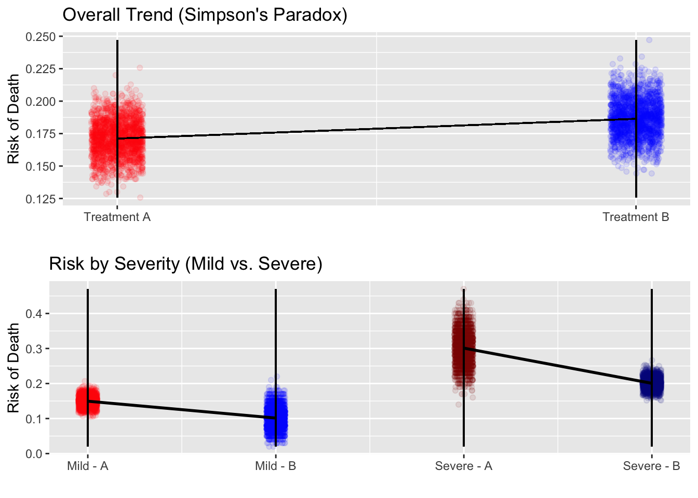

3 Explanation of Simpson’s paradox
Simpson’s Paradox is a concept in statistics where a trend or pattern observed within several groups is reversed when the groups are combined. This paradox occurs due to confounding variables. It highlights how the way data is aggregated can significantly alter the interpretation of the results.
Within each group, there is a clear trend. However, when these groups are combined, the trend reverses because of the difference in weights and/or proportions within each group. A confounding variable is an unaccounted factor that has a direct effect on the relationship between the treatment and the effect. In Simpson’s Paradox, the confounding variable skews the results because it creates an imbalance between the two treatments.
Simpson’s Paradox shows the importance of looking at data closely within groups rather than only looking at the aggregated data. It underscores the importance of considering context and tells a cautionary tale of how misinterpretations of data can lead to consequences. Before drawing conclusions, we must analyze data at the most specific level and consider all possible confounding variables.
Here is a real-world example to consider. Imagine a hospital testing two treatments for pneumonia. Treatment A is given to mostly patients with mild cases of pneumonia, while treatment B is given to mostly given to patients with severe cases of pneumonia. When you examine each vaccine’s efficacy for each severity group (mild or severe), it seems that treatment B is slightly more effective than treatment A. However, when you look at treatment A and B as a whole without regarding the severity of the cases, then vaccine A looks to be more effective because the majority of patients who receive it have mild cases of pneumonia, bringing down the average death rate. I simulated the study 2000 times. In the end, I produced a 2 by 3 table with the average death rate in each matrix. This helped show that while there are variations between different studies, the overall average of 2000 studies is pretty similar to the expected values for each group.
Next, I created two graphs demonstrating the effects of Simpson’s Paradox. The first graph illustrates the overall effects of Treatment A and Treatment B without considering disease severity as a confounding factor. Each treatment contains 2,000 data points, where each point represents the death rate for that treatment in a single simulation. The x-axis distinguishes between the two treatments, while the y-axis represents the risk of death. A linear model was then fitted to connect the two treatments, showing the overall trend in death risk between Treatment A and Treatment B. However, this graph does not account for the severity of the disease.
The second graph accounts for disease severity, revealing the true relationship between treatment and death risk. I separated data into four groups: Mild and Treatment A, Mild and Treatment B, Severe and Treatment A, and Severe and Treatment B, with each group containing 2,000 data points representing death rates from individual simulations. Instead of a single linear model, two separate models are fitted; one for Mild cases and one for Severe cases. In the end, it is clear that Treatment B results in lower death risk than Treatment A within each severity group. This demonstrates Simpson’s Paradox, where the overall trend in the first graph is misleading because it fails to account for the confounding effect of disease severity.
Lastly, this regression model quantifies the relationship between treatment, disease severity, and their influence on death risk. The dependent variable (response variable) is death risk, while the independent variables include treatment type (0 = Treatment A, 1 = Treatment B), disease severity (0 = Mild, 1 = Severe), and an interaction term (Treatment × Severity). The model estimates how switching treatments and increasing severity affect death risk, as well as whether the effectiveness of a treatment changes depending on severity. If the interaction term (between the treatment and the severity) is significant, it indicates that the effect of treatment differs for mild and severe cases, further confirming the presence of Simpson’s Paradox in the dataset.
suppressWarnings({
library(ggplot2)
library(dplyr)
library(gridExtra)
n_simulations <- 2000
rate11 <- numeric(n_simulations) # Mild and Treatment A
rate12 <- numeric(n_simulations) # Mild and Treatment B
rate21 <- numeric(n_simulations) # Severe and Treatment A
rate22 <- numeric(n_simulations) # Severe and Treatment B
rate1 <- numeric(n_simulations) # Total for Treatment A
rate2 <- numeric(n_simulations) # Total for Treatment B
for (i in 1:n_simulations) {
severity <- rep(c("Mild", "Severe"), each = 700)
treatment <- c(rep("Treatment A", 600), rep("Treatment B", 100), rep("Treatment A", 100), rep("Treatment B", 600))
outcome <- c(rbinom(600, 1, 0.15), rbinom(100, 1, 0.1), rbinom(100, 1, 0.3), rbinom(600, 1, 0.2))
data <- data.frame(Severity = severity, Treatment = treatment, Outcome = outcome)
death_counts <- tapply(data$Outcome, list(data$Severity, data$Treatment), sum)
total_counts <- table(data$Severity, data$Treatment)
proportions <- death_counts / total_counts
rate11[i] <- proportions["Mild", "Treatment A"]
rate12[i] <- proportions["Mild", "Treatment B"]
rate21[i] <- proportions["Severe", "Treatment A"]
rate22[i] <- proportions["Severe", "Treatment B"]
rate1[i] <- sum(death_counts["Mild", "Treatment A"], death_counts["Severe", "Treatment A"]) /
sum(total_counts["Mild", "Treatment A"], total_counts["Severe", "Treatment A"])
rate2[i] <- sum(death_counts["Mild", "Treatment B"], death_counts["Severe", "Treatment B"]) /
sum(total_counts["Mild", "Treatment B"], total_counts["Severe", "Treatment B"])
}
avg_rate11 <- mean(rate11) * 100
avg_rate12 <- mean(rate12) * 100
avg_rate21 <- mean(rate21) * 100
avg_rate22 <- mean(rate22) * 100
avg_rate1 <- mean(rate1) * 100
avg_rate2 <- mean(rate2) * 100
final_table <- data.frame(
Treatment = c("Treatment A", "Treatment B"),
Mild_Avg = paste(round(c(avg_rate11, avg_rate12), 1), "%"),
Severe_Avg = paste(round(c(avg_rate21, avg_rate22), 1), "%"),
Total_Avg = paste(round(c(avg_rate1, avg_rate2), 1), "%")
)
print(final_table)
overall_plot_data <- data.frame(
X_Pos = rep(c(1, 2), each = n_simulations),
Death_rate = c(rate1, rate2),
Treatment = rep(c("Treatment A", "Treatment B"), each = n_simulations)
)
p1 <- ggplot(overall_plot_data, aes(x = X_Pos, y = Death_rate, color = Treatment)) +
geom_point(alpha = 0.1, position = position_jitter(width = 0.05, height = 0), show.legend = FALSE) +
geom_segment(aes(x = 1, xend = 1, y = min(Death_rate), yend = max(Death_rate)), color = "black") +
geom_segment(aes(x = 2, xend = 2, y = min(Death_rate), yend = max(Death_rate)), color = "black") +
geom_segment(aes(x = 1, y = avg_rate1 / 100, xend = 2, yend = avg_rate2 / 100), color = "black") +
scale_x_continuous(breaks = c(1, 2), labels = c("Treatment A", "Treatment B")) +
scale_color_manual(values = c("Treatment A" = "red", "Treatment B" = "blue")) +
labs(x = "", y = "Risk of Death", title = "Overall Trend (Simpson's Paradox)")
plot_data_p2 <- data.frame(
X_Pos = rep(c(1, 2, 3, 4), each = n_simulations),
Death_rate = c(rate11, rate12, rate21, rate22),
Group = rep(c("Mild - Treatment A", "Mild - Treatment B", "Severe - Treatment A", "Severe - Treatment B"), each = n_simulations),
Severity = rep(c("Mild", "Mild", "Severe", "Severe"), each = n_simulations)
)
p2 <- ggplot(plot_data_p2, aes(x = X_Pos, y = Death_rate, color = Group)) +
geom_point(alpha = 0.1, position = position_jitter(width = 0.05, height = 0)) +
geom_segment(aes(x = 1, xend = 1, y = min(Death_rate), yend = max(Death_rate)), color = "black") +
geom_segment(aes(x = 2, xend = 2, y = min(Death_rate), yend = max(Death_rate)), color = "black") +
geom_segment(aes(x = 3, xend = 3, y = min(Death_rate), yend = max(Death_rate)), color = "black") +
geom_segment(aes(x = 4, xend = 4, y = min(Death_rate), yend = max(Death_rate)), color = "black") +
geom_smooth(data = subset(plot_data_p2, Severity == "Mild"), method = "lm", se = FALSE, color = "black") +
geom_smooth(data = subset(plot_data_p2, Severity == "Severe"), method = "lm", se = FALSE, color = "black") +
scale_x_continuous(breaks = c(1, 2, 3, 4), labels = c("Mild - A", "Mild - B", "Severe - A", "Severe - B")) +
scale_color_manual(values = c("Mild - Treatment A" = "red", "Mild - Treatment B" = "blue",
"Severe - Treatment A" = "darkred", "Severe - Treatment B" = "darkblue")) +
guides(color = "none") +
labs(x = "", y = "Risk of Death", title = "Risk by Severity (Mild vs. Severe)")
grid.arrange(p1, p2, nrow = 2)
regression_data <- data.frame(
Death_rate = c(rate11, rate12, rate21, rate22),
Treatment = rep(c(0, 1, 0, 1), each = n_simulations), # 0 = Treatment A, 1 = Treatment B
Severity = rep(c(0, 0, 1, 1), each = n_simulations) # 0 = Mild, 1 = Severe
)
regression_data$Treatment <- as.numeric(regression_data$Treatment)
regression_data$Severity <- as.numeric(regression_data$Severity)
regression_data$Interaction <- regression_data$Treatment * regression_data$Severity
model <- lm(Death_rate ~ Treatment + Severity + Interaction, data = regression_data)
unique(predict(model))
})## Treatment Mild_Avg Severe_Avg Total_Avg
## 1 Treatment A 15 % 29.9 % 17.1 %
## 2 Treatment B 10 % 20.1 % 18.6 %## `geom_smooth()` using formula = 'y ~ x'
## `geom_smooth()` using formula = 'y ~ x'
## [1] 0.1495667 0.1002400 0.2990550 0.20065753.1 1.2 Introduction to Counterfactuals and Potential Outcomes
At the heart of causal inference lies a simple yet powerful idea: counterfactuals — what would have happened if something else had occurred. To formalize this, the Potential Outcomes Framework defines two outcomes for each individual:
Y(1): The outcome if the individual receives the treatment Y(0): The outcome if the individual does not receive the treatment The causal effect for an individual is the difference: τi = Yi(1) − Yi(0)
But here’s the catch: we can never observe both outcomes for the same person. This is known as the Fundamental Problem of Causal Inference. We only observe the outcome under the condition that actually occurred — everything else is unobserved, or counterfactual.
As shown in the Simpson’s Paradox example above, failing to account for confounding variables can lead to conclusions that completely misrepresent the true causal effect. When we simply compare outcomes between treated and untreated groups without considering differences in their underlying characteristics (like disease severity), we risk attributing differences to the treatment that are actually due to selection bias. By thinking in terms of potential outcomes — what would have happened under treatment vs. no treatment — we can see how causal claims require more than just association. This framework makes clear that understanding the data-generating process is critical, and it motivates the need for methods that can uncover hidden structure in the data.
While the average treatment effect (ATE) helps summarize the overall impact of a treatment, it often masks important variation across individuals. In practice, not everyone responds to treatment the same way — some benefit more than others, and some may even be harmed. This brings us to the concept of the Individual Treatment Effect (ITE), which asks: what was the treatment effect for this specific person? Although we can never observe both potential outcomes for a single individual, we can use modeling techniques to estimate ITEs and explore treatment effect heterogeneity. The following example demonstrates how this was done using simulated data.